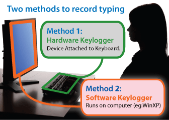
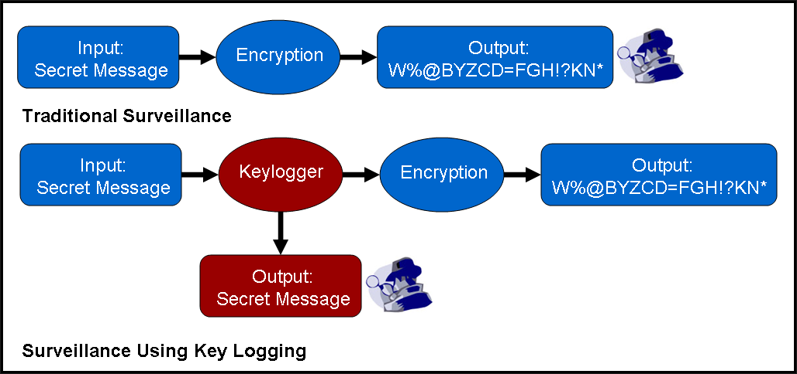
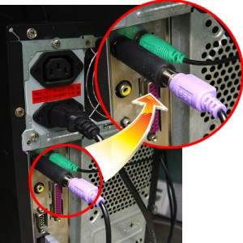
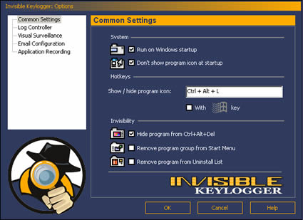

I keyloggers :
Un keylogger (letteralmente registratore di tasti) è un dispositivo incaricato di salvare le digitalizzazioni dei tasti della tastiera e di registrarle, all'insaputa dell'utente. Si tratta quindi di un dispositivo di spionaggio.
Alcuni keylogger sono capaci di registrare gli URL visitati, la posta elettronica consultata o inviata, i file aperti, fino a creare un video che ripercorra ogni attività del computer !
Dato che i keylogger registrano tutte le digitazioni della tastiera, possono servire a dei malintenzionati per recuperare le password degli utenti dalla postazione di lavoro! Questo significa che bisogna essere particolarmente vigilanti quando usate un computer di cui non vi fidate (postazione a libero accesso in un'azienda, una scuola o in un luogo pubblico come un cybercaffè).
Keylogger: software o hardware
I keylogger possono essere sia software che hardware. Nel primo caso si tratta di un processo furtivo (oppure con un nome che assomigli al nome di un processo di sistema), che scrive le informazioni catturate in file nascosto! I keylogger possono anche essere hardware: si tratta allora di un dispositivo (cavo o dongle) posto tra il computer e la tastiera.


Alcuni tipi di keylogger :

